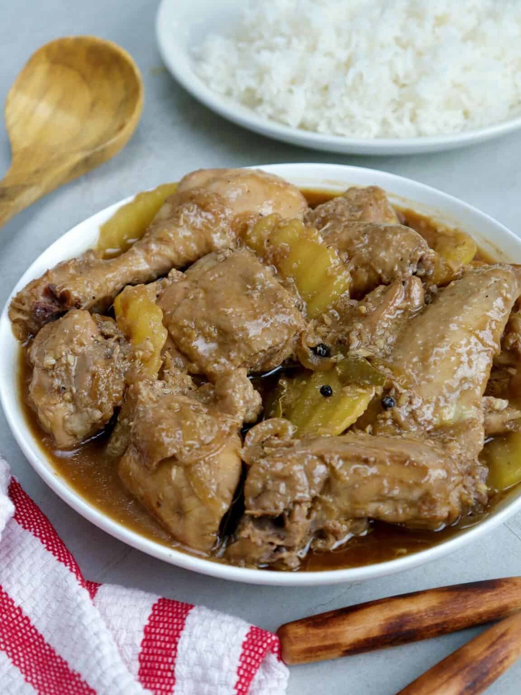

Adobong Manok

Chicken Adobo is easy on prep yet big on flavor. Braised in vinegar, soy sauce, and garlic, this classic Filipino stew is a delicious medley of savory tastes you’ll love with steamed rice!
Chicken adobo is one of the many variations of the classic Filipino style of cooking. Like its pork counterpart, this chicken version is made by braising the meat in a mixture of soy sauce, vinegar, and aromatics such as onions, garlic, peppercorns, and bay leaves.
Ingredients
- 1 (3 to 4 pounds) whole chicken, cut into serving parts
- 1 onion, peeled and sliced thinly
- 1 head garlic, peeled and minced
- 2 bay leaves
- 1/4 cup soy sauce
- 1/2 teaspoon peppercorns
- 1/4 cup canola oil
- 2 large potatoes, peeled and sliced into rounds
- 1/2 cup vinegar
- 1 cup water
- salt and pepper to taste
Steps
- In a large bowl, combine chicken, soy sauce, onions, garlic, peppercorns, and bay leaves. Massage onto meat and place in the refrigerator to marinate for about 30 minutes. Drain chicken well, reserving liquid and aromatics.
- In a wide, heavy-bottomed skillet over medium heat, heat oil. Add the potatoes and cook, turning as needed, until lightly browned and halfway tender. With a slotted spoon, remove the potatoes and drain on paper towels. Remove excess oil from pan except for about 1 tablespoon.
- Add chicken including onions, garlic, and bay leaves. Cook, turning occasionally, until lightly browned.
- Add vinegar and allow to boil, uncovered and WITHOUT stirring, for about 2 to 4 minutes.
- Add the reserved marinade and water and stir to combine. Allow to a boil for 2 to 3 minutes.
- Lower heat, cover, and simmer for about 20 to 30 minutes or until chicken is cooked through.
- Add potatoes and cook until tender and sauce is reduced.
- Season with salt and pepper to taste. Serve hot.